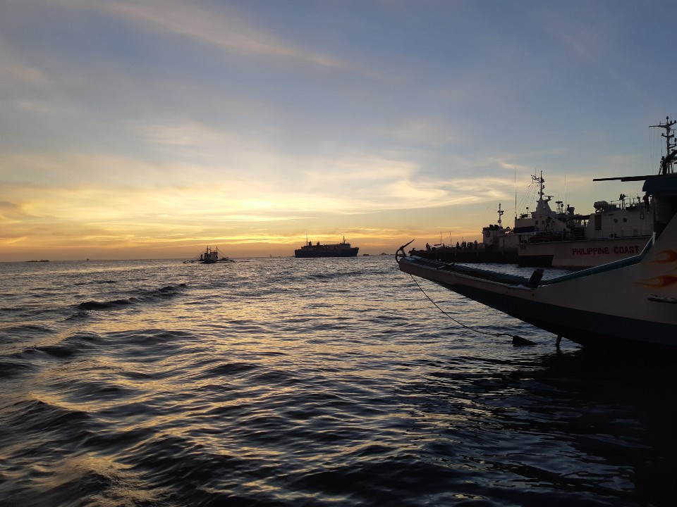

물론 8년간 공부해왔던 항공정비사의 꿈을 버리는것이 쉬운 선택은 아니였다. 많이 아쉬운만큼 미련도 많이 남았고 그만큼 이 꿈에서 돌아서는것이 정말 힘들었다.
하지만 나날이 코로나19로 인한 경제적인 상황은 물론, 항공업계 자체가 흔들거리는것을 보며사실 공인중개사와 용접사, 개발자 그리고 아빠가 하는 사업을 배우고 이어나가는것 중 매일밤 설쳐가며 고민했다.
그 중 개발자를 선택한 이유는 일을 하게되면 정년이 다되도록 '내가 즐기며 일을 할 수 있는가?'
에 대한 질문을 스스로 던져 보았을때
그에 대해 'YES' 라는 대답이 나온 것은 개발자 라는 직업이다.
